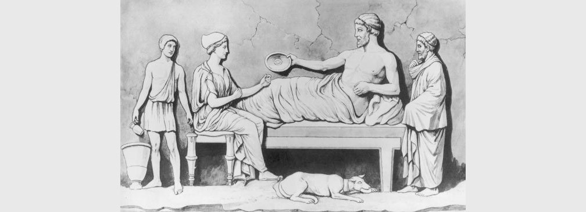
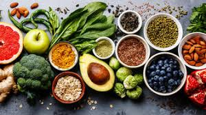

You only have one body, and you want to keep it healthy! Staying healthy involves making good choices every day about nutrition and exercise. It sounds simple, but understanding what those good choices are can be confusing. How much should you eat? What are empty calories? Why is exercise so important? What should your heart rate be, and what is the connection between heart rate, exercise, and staying healthy?
The purpose of this webpage is to educate people how to maintain a healthy diet and spread awareness about the importance of healthy lifestyle. Keeping a healthy lifestyle is important as it will prevent us from many chronic disease such as diabetes, heart disease, obesity and many more. According to the World Health Organization, at least 35% of adults aged 20+ were overweight and this is one of our concern. As this website provide some knowledge about healthcare, we hope that people will take note and practice it. We are likely with the existence of this website, people around the world can become more healthier and free from any disease.
What is mean by good health?
Health is a state of complete physical, mental and social well-being and not merely the absence of disease or infirmity.
In 1986, the WHO further clarified that health is:
"A resource for everyday life, not the objective of living. Health is a positive concept emphasizing social and personal resources, as well as physical capacities."
This means that health is a resource to support an individual's function in wider society. A healthful lifestyle provides the means to lead a full life
Why we need a good health?
Staying healthy physically can help you stay healthy emotionally too. If you're eating the right food and keeping fit, your body will be strong and help you to cope with stress and also fight illness. Eating well and exercising often when you're a teenager will also help you stay in good health later in life.
To Avoid Pain and Disease
When people think of “healthy,” they often think of “disease-free.” This is probably one of the main reasons to lead a healthy lifestyle. Healthy means no heart disease, no diabetes, no high-blood pressure and no respiratory diseases. It also means healthy joints, strong bones and good vision. A vast majority of the diseases that affect humans can be prevented with lifestyle changes.
To Enjoy Life More Scientists have yet to find the key to extending life. Whether it’s a healthy diet, less stress or just genetics, nobody can say how long you’ll live. Sure, you can prevent disease and improve your energy labels by taking care of your health, but maybe that’s not the ultimate goal. By keeping yourself healthy, you’re also improving your quality of life. You’ll have more strength to go hiking, play your favorite sport or walk with your dog. A healthy mind means less stress and more chances to enjoy the things and the people you love. If you always wanted to travel after you retire, being healthy will allow you not only more years to explore but also improve your chances that you can make the most of each trip.
To Reach Your Goals
Whether you have a goal of climbing the Kilimanjaro or a goal of getting a promotion at work, staying healthy will help you achieve it. Health means more energy while at work, improved memory and attention span and even a better mood. All those qualities can help you improve your chances of advancement at work. If you have a mighty goal, such as running a marathon, the need to be healthy is even more obvious.

HISTORY
1. DIET
A brief history of diets
The notion of ‘diet’ simply defines the range of food we eat, of any kind, shape, or form. However, our natural and socioeconomic environment has led the general public to understand the term ‘diet’ as something restrictive, namely as a method for losing weight.
The Ancient Greeks and Romans already understood that food and physical exercise influence our health and our weight. The Greek ‘diatia’ (from which the word ‘diet’ is derived) referred to a whole way of living focused on self-control and eating in moderation. With Christian asceticism, this moderation was translated into self-denial, whereby the body was seen as an obstacle to the elevation of the soul, as with the example of Saint Anthony in the late 3rd century CE. The sin of gluttony continues to haunt the Christian world today.
In 1474, the Italian humanist Bartolomeo Sacchi, aka Il Platina, wrote the first bestselling diet book. Advances in printing techniques meant that his De honesta voluptate e valetudine was read throughout Europe, and high society became obsessed with his recommendations regarding the relationship between gastronomic pleasure (voluptate) and health (valetudine). However, it is How to Live One Hundred Years – Discourses on the Sober Life (1558) by Alvise (Luigi) Cornaro that continues to be cited today. After realising the risks he was taking with his self-indulgent lifestyle, this Venetian aristocrat adopted a frugal diet and lived to become a centenarian. His book makes reference to the ancient writers and thus revives the Ancient Greek principles of moderation to show that a healthy lifestyle starts with a healthy diet.
Scientific advances, notably in medicine, led to discoveries (proteins, carbohydrates, lipids, vitamins, etc.) that altered our perception not only of the human body but also of what we eat. The 20th century then saw the emergence of a plethora of diets that focused on these compounds and their energetic properties. In 1918, Lulu Hunt Peters published Diet & Health: With Key to the Calories. She urged her female readers to consider food in terms of calories and not to consume more than 1200 a day (to put this in perspective, the consensus today is for 1600 to 2500 kcal a day, depending on age, physical activity and health). She paved the way for other methods to lose weight, such as the Weight Watchers diet that allocates points to foodstuffs according to their calorie and nutritional content. Some diets advocate the consumption of particular foodstuffs for the nutrients they may or may not contain. As an example, in gluten-free diets, the Atkins diet of the 1970s or the Dukan diet of the 2000s, the nutrient what counts and the form it takes is of secondary importance. Other diets involve abstinence from certain foodstuffs on ethical principles: Veganism goes far beyond a simple refusal to eat any products derived from animals and makes a plant-based diet a real lifestyle choice.

DIET
DIET
Does the word "diet" immediately make you think of an unpleasant weight-loss regimen?
If it did, you are probably not alone. For example, consider the use of the term "diet" in marketing food products—it usually describes foods low in calories, such as diet soda.
But there is another meaning of this word. Diet can also refer to the food and drink a person consumes daily and the mental and physical circumstances connected to eating. Nutrition involves more than simply eating a “good” diet—it is about nourishment on every level. It involves relationships with family, friends, nature (the environment), our bodies, our community, and the world.
Choices about nourishment are very much linked to other human beings and other life forms on this planet, so healthy (and unhealthy) decisions have great impact